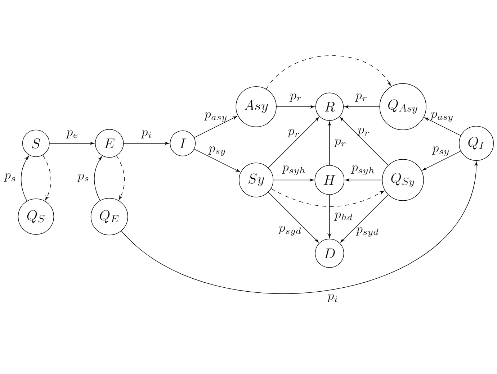

Highlights of my PhD
Over the course of my PhD I had the opportunity to take part in different events. These include competitions I enrolled in with colleagues, venues where I had the opportunity to present my research (both to fellow colleagues and general audiences) and extra-curricular courses, workshops or summer schools. Below you can find the most important ones, with links to related pages.
Conferences and dissemination events
Big data challenges for mathematics
WorkshopI gave a talk titled Gaussian Processes for shape modelling and registration, presenting the GP framework for 3D shape modelling and our method SFGP, together with its application to the challenging case of ear modelling.
21st ECMI Conference on Industrial and Applied Mathematics
MinisymposiumI presented the main results of the first part of my research in the Mini Symposia Mathematics for Big Data, in a talk titled From noisy point clouds to complete ear models: unsupervised pipeline for application in the prosthetic industry .
 December 2020, Online
December 2020, Online
PhD2ays 2020
Dissemination activityAn event organized by PhD students at UNIMI to share their work with other students. I was responsible for the website and gave a talk with title Learning from 3D data: how mathematics can create a realistic human face.
 November 2020, Online
November 2020, Online
MeetMeTonight
Dissemination activityDissemination event with the University of Milan aim at the general public. We did Faccia a faccia con la ricerca - jointly with Stevo Racković (University of Lisbon) and Rongjiao Ji (University of Milan).
 October 2020, Online
October 2020, Online
Virtual Seminars on Complexity
Seminar talkI gave a talk on October 20th with the title: From noisy point clouds to complete ear models: an unsupervised pipeline for application in the prosthetic industry . An overview of my research with emphasis on the application compoenent.
 July 2019, Valencia
July 2019, Valencia
ICIAM 2019
MinisymposiumAs part of a Minisymposium organized by BIGMATH, I presented the initial segment of my research, with title ”Big data processing for multivariate, noisy, and time-correlated data: human face reconstruction” - jointly with Stevo Racković (University of Lisbon) and Rongjiao Ji (University of Milan).
Competitions
ECMI 2021 Students Competition
 Competition - First Place!With Stevo Racković (University of Lisbon) and Greta Malaspina (University of Novi Sad), we won the first place in the ECMI 2021 competition. The goal was to produce a mathematical model that would fit the data of COVID-19 in Great Britain and Israel.
We will present our solution at the Educational Committee of ECMI next spring, and now we are invited to make a full paper for publication - with more detailed experiments and final conclusions.
 January, 2021, Online
January, 2021, Online
AAAS Student E-poster Competition
Competition - Third Place!With two colleagues from the BIGMATH program we won third place in the e-Poster competition for the graduate students, with the title 'Meet my Avatar' that merges the ideas from the three research fields: inverse rig estimation, face reconstruction, and emotion recognition.
 June 2020, Online
June 2020, Online
#EUvsVirus pan-European Hackathon
HackathonWith Stevo Racković (University of Lisbon), Greta Malaspina (University of Novi Sad) and Perfect. We worked on a platform for online evaluations aimed at overcoming the difficulties brought by the COVID-19 pandemic.
Courses and Workshops
Scientific writing and publication
CourseTechniques and tools for an efficient communication to outreach scientific communities and public. Expected acquired skills: plan and develop research papers and thesis in the scientific format (IMRAD); prepare papers for ISI journals; submit papers to ISI journals and effectively dialogue with journal editors and reviewers.
ECMI Postgraduate MODELLING WEEK
Summer SchoolDuring a week we have worked together with other students, academic advisors and a company, to solve an industrial problem proposed by such company. I worked in problem "Data driven modeling and prediction algorithms at Zalando Payments". At the end, a presentation was made to summarize the achieved results, methods and challenges.